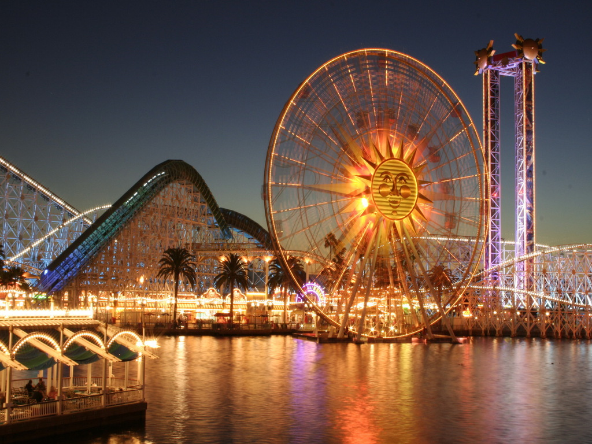
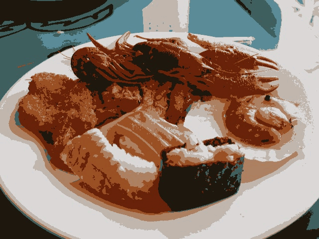

on
[EX-08] Kmeans
Exercício 8
Objetivo
Utilizando o programa kmeans.cpp como exemplo prepare um programa exemplo onde a execução do código se dê usando o parâmetro nRodadas=1 e iniciar os centros de forma aleatória usando o parâmetro KMEANS_RANDOM_CENTERS ao invés de KMEANS_PP_CENTERS. Realize 10 rodadas diferentes do algoritmo e compare as imagens produzidas. Explique porque elas podem diferir tanto.
Implementação
Modificando o número de rodadas, inserindo o parâmetro KMEANS_RANDOM_CENTERS e realizando 10 iterações através de um loop, temos:
kmeans.cpp
[...]
for (int i = 0; i < 10; i++) {
int nClusters = 8;
Mat rotulos;
int nRodadas = 1;
Mat centros;
Mat img = imread(argv[1], cv::IMREAD_COLOR);
Mat samples(img.rows * img.cols, 3, CV_32F);
for (int y = 0; y < img.rows; y++) {
for (int x = 0; x < img.cols; x++) {
for (int z = 0; z < 3; z++) {
samples.at<float>(y + x * img.rows, z) =
img.at<Vec3b>(y, x)[z];
}
}
}
kmeans(samples, nClusters, rotulos,
TermCriteria(TermCriteria::MAX_ITER | TermCriteria::EPS, 10000,
0.0001),
nRodadas, KMEANS_RANDOM_CENTERS, centros);
Mat rotulada(img.size(), img.type());
for (int y = 0; y < img.rows; y++) {
for (int x = 0; x < img.cols; x++) {
int indice = rotulos.at<int>(y + x * img.rows, 0);
rotulada.at<Vec3b>(y, x)[0] =
(uchar)centros.at<float>(indice, 0);
rotulada.at<Vec3b>(y, x)[1] =
(uchar)centros.at<float>(indice, 1);
rotulada.at<Vec3b>(y, x)[2] =
(uchar)centros.at<float>(indice, 2);
}
}
char output[50];
sprintf(output, "./exercises/8/output%d.jpg", i + 1);
imwrite(output, rotulada);
}
[...]Resultados
 Imagem original
Após executar o programa e obter as 10 imagens, foi utilizado o site ezgif.com para criar um GIF mostrando cada uma delas em ordem.
 10 iterações de kmeans com nRodadas = 1
O efeito apresentado dá-se devido à aleatoriedade da escolha de centros, porporcionada pelo parâmetro KMEANS_RANDOM_CENTERS.